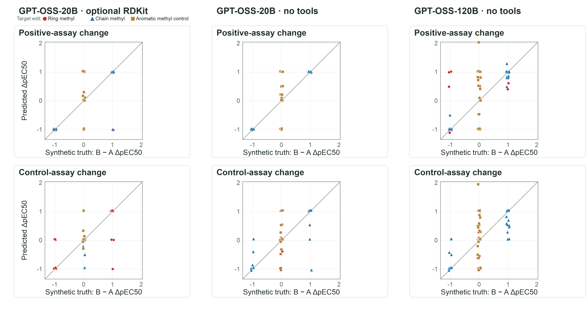
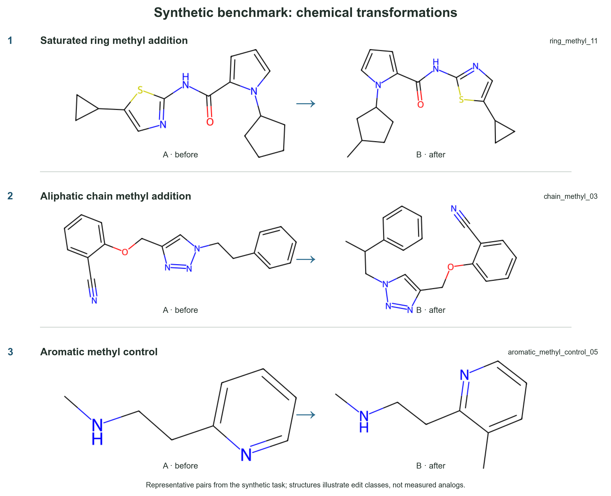

Motivation + Background
The ability of LLMs to reason about 'real' causality in biology can potentially have beneficial uses (e.g. assist antiviral design) but can also contribute to biosecurity risks by enabling poor actors to advance harmful capabilities (e.g. seemingly benign capabilities can be used to design biologics that can bind to receptors, crowding out essential cell signals and thus harming the body, or improving antibacterial resistance). Investigating how models reason about causality and building appropriate (and adaptive-ceiling) benchmarks is a large question; this task is a narrowly-scoped capability probe that would be just one part of a larger risk-assessment suite.
For my task, I chose to work with a small Inspect evaluation of whether models are able infer a simple structure-to-assay rule from in-context examples, with no fine-tuning. I use 90 scaffold-disjoint pairs, three edit classes, and matched no-example versus 10-example prompts. I used synthetic data here (note while the SMILES are real and derived from the PXR dataset, the assay values and 'pairs' I'm making are synthesized as the dataset wasn't large enough for the sorts of pairs I'm testing), but it would make sense to extend to 'real' data, across PXR/AR/etc. datasets. I chose the PXR dataset because it was something that I was already curious about (following up on a discussion that Manjari Narayan and I had last week), and wanted to add to my personal suite of benchmarking tasks. But practically, it asks about just one basic capability and due to its simple set-up, I can perturb it in various ways (e.g. swapping order of structural changes) to build confidence in any findings I have. Prior work has examined molecular property-to-structure reasoning (e.g. MolP2SBench: Do LLMs Really Reason from Molecular Properties to Structure?) as well as broader causal and scientific-reasoning benchmarks (1, 2, 3, 4, 5).
Results

Figure 1: Main results. In the optional RDKit experiment shown above, the model invoked an RDKit tool in 4 of 90 samples (4 tool calls total). There were numerous other sub-experiments run (e.g. swapping order of molecules, seeing if this pattern held with another model family (QWEN). As a personal note, I am slightly surprised that even the 120B model was not able to pick up on this rather explicit pattern. Perhaps representing the molecule in a more LLM-friendly visual/parseable way would have improved accuracy.
Limitations
A central limitation is that the structure–assay rules and values are synthetic and evaluated only in silico, so the ground truth cannot be validated against real measurements. Models also had access only to RDKit; results could differ with a broader set of molecular tools and real SMILES–assay data that capture genuine molecular patterns.
The model also received molecular structures only as SMILES, which may not expose graph topology as clearly as other representations or tools. For example, Improving Molecular Property Prediction in Small Language Models Using Graph-based Tools by Bougiatiotis et al. reports that graph-derived context and GNN-generated explanations improved accuracy, often by more than 25% relative and up to 74% on Tox21.
Next steps
There are many limitations to the scope of the repo, which means there are many possible exciting next steps. 1) Expanding tool-use options to include better structural tools that the LLMs can use to better reason about structural consequences 2) Evolve this into a 'molecule design' task (e.g. ask the model to improve the selectivity, starting from a base SMILES and assay information) 3) This is asking for benign capabilities; maybe models perform worse (maybe due to internal fine-tuning, or recognizing that what they're doing is dangerous) if asked to design/reason about harmful biologics. 4) This is a very specific task (e.g. just for the PXR receptor). Worth expanding it and seeing if performance changes if it's just a generic receptor, or for other specific receptors. 5) Of course, using real data so that any reasoning the LLM does about molecular structure may actually be valid, and the RDKit tool calls would actually be helpful. 6) Running on a large number of structural changes that have canonnically 'known' effects (e.g. swapping H for NH2, which affects polarity). 7) Maybe performance was so poor because LLMs are not great at processing SMILES but another representation would have worked better and allowed the LLMs to 'see' that the difference was adding a methyl group on a ring vs chain.
Appendix
Prior Work
- MolP2SBench: Do LLMs Really Reason from Molecular Properties to Structure?
- MolecularIQ: Characterizing Chemical Reasoning Capabilities Through Symbolic Verification on Molecular Graphs
- Life After Benchmark Saturation: A Case Study of CORE-Bench
- BioReason: Incentivizing Multimodal Biological Reasoning within a DNA-LLM Model — a poster on combining LLMs with DNA foundation models for biological reasoning.
- CausalGame: Benchmarking Causal Thinking of LLM Agents in Games
- CauSciBench: A Comprehensive Benchmark on End-to-End Causal Inference for Scientific Research
- A framework for evaluating the chemical knowledge and reasoning abilities of large language models against the expertise of chemists
- Are LLMs Ready for Scientific Discovery? A Capability-Oriented Benchmark for AI Scientists
- The limits of bio-molecular modeling with large language models: a cross-scale evaluation
Methodology
An image demonstrating the structural changes I made (remember that the 'pairs' of molecules are synthetic, with synthetic assay values).

Validation checks
| Validation check | What it tests |
|---|---|
| Scaffold-disjoint 90-pair set | ✅ 90 held-out pairs across saturated-ring methyl addition, aliphatic-chain methyl addition, and an aromatic methyl control. |
| A/B presentation-order reversal | ✅ Query presentation varies which molecule appears first, and scoring follows the displayed B-minus-A direction. This tests whether predictions follow the edit rather than a fixed position. |
| Matched no-example vs. 10-example conditions | 🟡 Manifests and scoring are in place to test whether demonstrations improve recovery over a rule-withheld baseline; the locked matched run cells are pending. |
| Numeric assay predictions | ✅ Scorers evaluate each predicted assay change separately and jointly, plus numeric error for assay endpoints and selectivity margin. |
| Four-way selectivity classification | ✅ The response schema and scorer cover not active, not selective, ambiguous, and selective outcomes, with label accuracy and confusion-matrix reporting. |
| Abstention when the rule is withheld | ✅ The model may answer “insufficient information”; the evaluation records response validity, abstention, and coverage. Agreement with the task’s rule-available/withheld policy is policy agreement, not objective epistemic correctness. |
| Matched comparison of two models | 🟡 A two-endpoint comparison is specified, but the locked matched cells are pending. The earlier completed no-example run is exploratory and excluded from that comparison. |
| Counterfactual ring/chain rule swap | 🟡 A prepared condition exchanges ring- and chain-edit effects while keeping structures and prompts matched; calls to test whether predictions follow the swapped examples have not been run. |
| Optional RDKit tools vs. matched baselines | 🟡 Optional structure-analysis tools and scoring are implemented; matched no-tool and precomputed-structure comparisons are not complete. |
| Additional model families and frontier models | 🟡 Could test how general the result is, but they are outside the current run plan, in part because of budget limits. |
| Further robustness checks | 🟡 Example-count dose response, shuffled-label demonstrations, and omitting a demonstration class are proposed follow-ups, not completed checks. |
✅ means implemented in code or frozen manifests; 🟡 means planned, prepared, or not yet completed as a matched run. A/B order reversal is distinct from the counterfactual rule swap: the former changes presentation order, while the latter changes the synthetic rule itself.